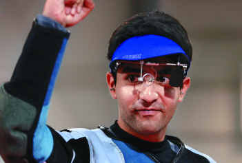

<?xml version="1.0" encoding="UTF-8"?>
<rss version="2.0"
	xmlns:content="http://purl.org/rss/1.0/modules/content/"
	xmlns:wfw="http://wellformedweb.org/CommentAPI/"
	xmlns:dc="http://purl.org/dc/elements/1.1/"
	xmlns:atom="http://www.w3.org/2005/Atom"
	xmlns:sy="http://purl.org/rss/1.0/modules/syndication/"
	xmlns:slash="http://purl.org/rss/1.0/modules/slash/"
	>

<channel>
	<title>Chronosynclastic Infundibulum &#187; abhinav bindra</title>
	<atom:link href="http://www.semanticoverload.com/tag/abhinav-bindra/feed/" rel="self" type="application/rss+xml" />
	<link>http://www.semanticoverload.com</link>
	<description>The world through my prisms</description>
	<lastBuildDate>Thu, 07 Apr 2011 17:36:17 +0000</lastBuildDate>
	<language>en-US</language>
	<sy:updatePeriod>hourly</sy:updatePeriod>
	<sy:updateFrequency>1</sy:updateFrequency>
	<generator>http://wordpress.org/?v=3.5</generator>
		<item>
		<title>Dr. Bindra I presume?</title>
		<link>http://www.semanticoverload.com/2008/09/09/dr-bindra-i-presume/</link>
		<comments>http://www.semanticoverload.com/2008/09/09/dr-bindra-i-presume/#comments</comments>
		<pubDate>Tue, 09 Sep 2008 06:07:19 +0000</pubDate>
		<dc:creator>Semantic Overload</dc:creator>
				<category><![CDATA[education]]></category>
		<category><![CDATA[india]]></category>
		<category><![CDATA[rant]]></category>
		<category><![CDATA[abhinav bindra]]></category>
		<category><![CDATA[PhD]]></category>

		<guid isPermaLink="false">http://www.semanticoverload.com/?p=220</guid>
		<description><![CDATA[Abhinav Bindra has been conferred with an honorary doctorate from SRM University in Chennai. Honest! I am not making this up! Ask Times of India and NDTV! What amazed me was that very few were outraged by it, well except for Mekhala. She makes a good point in her blog post when she asks, &#8220;&#8230;[sic] [...]]]></description>
				<content:encoded><![CDATA[<p><a href="../../../wp-content/uploads/2008/09/bindra.jpg"></a></p>
<p>Abhinav Bindra has been conferred with an honorary doctorate from SRM University in Chennai. Honest! I am not making this up! Ask <a title="Abhinav Bindra si conferred with an honorary doctorate" href="http://timesofindia.indiatimes.com/Chennai/Shooter_Bindra_becomes_doctor_/articleshow/3456938.cms">Times of India</a> and <a title="Abhinav becomes Dr. Bindra" href="http://www.ndtv.com/convergence/ndtv/showsports.aspx?id=SPOEN20080064440&amp;ch=9/7/2008%205:30:00%20PM">NDTV</a>!</p>
<p>What amazed me was that very few were outraged by it, well except for <a title="Blog: Into Madness" href="http://mekhala.blogspot.com">Mekhala</a>. She makes a good point in her <a href="http://mekhala.blogspot.com/2008/09/shooter-bindra-becomes-doctor.html">blog post</a> when she asks, &#8220;&#8230;[sic] but doesn&#8217;t a doctorate demand academic scholarship?&#8221; That&#8217;s a very good question. But, before I move forward I must add the disclaimer that I am awfully proud of Abhinav Bindra, and I am not undervaluing what he has achieved. It is a great accomplishment for both the nation, and him personally. However, I do believe that giving away doctorates to people who have not demonstrated academic excellence, and who have not made original contributions to their field only serves to devalue the degree. But what is the value of a PhD degree anyway? One way to ascertain that is to see what it takes to get a PhD (full merit, non-reservation style).</p>
<p><span id="more-220"></span></p>
<p>Most universities follows a format similar to what I am about to describe. They may skip some steps, or combine them with others, but by-and-large, this is the procedure. First, there is the whole selection process which serves to filter out the people who just aren&#8217;t the doctorate type. Second, depending on which university you go to, there are courses you have to take and maintain a GPR of at least 3.0. Third, you have to take what are called &#8216;qualifiers&#8217; in which you take tests in your area of specialization for 9 hours (that&#8217;s right, 9 hours) within a day and a half. Forth, you have your preliminaries in which each member of your doctoral advisory committee (your Guides/Advisors) will each give you either an open problem (i.e. a problem whioch hasn&#8217;t been solved yet), or ask you to appraise current research in your area. After you have answered these questions to they satisfaction you go ahead with your proposal. Fifth, is your disseration proposal. In your proposal you clearly outline what you intend to achieve for your PhD and argue why the problem you have chosen to tackle is unsolved, novel, interesting, and how it will benefit your community, and above all argue that the problem is difficult enough to merit a PhD. And then begins the actual research which often yields peer-reviewed publications in internationally renouned venues like conferences and journals. This is how you demonstrate that your research is novel, interesting, and tackles unsolved problems. And finally, you write your dissertation, and then defend that dissertation to your adviosry committee&#8217;s satisfaction, following which you are deemed worthy of a PhD.</p>
<p>Now, one might argue that the rigor, training, and dedication that fetch Bindra an olympic gold is comparable to the rigors of a PhD program. However, there is a universally singular critical element to a PhD effort which Bindra does not meet: original contribution to the field. If Abhinav Bindra had come up with a novel technique for shooting, or had contributed something new to shooting that was the first of its kind &#8212; it could be anything from new benchmarking tools to better cross-wires &#8212; then I would be more sympathetic to him being conferred a doctorate (I guess that makes a good case for Ajantha Mendis for his carrom ball). However, Abhinav hasn&#8217;t done anything of that nature.</p>
<p>Here&#8217;s an analogy that might make things clearer: You cannot get a PhD for being the best Java programmer in the world, but you can make a case for something who invents a new programming language that sets a new standard. The same is true here with Bindra. He may be the best shooter in the world, but that does not qualify him for a PhD.</p>
<p>I have no objections to giving him a Khel Ratna, but a PhD? No! There is certain snactity associated with PhD. It says that this person has proved him/herself by going through the process and contributing something new and worth to the community; this person is capable of independent research, and is primed to serve the community by expanding our collective knowledge. By giving away PhDs to people who do not meet such criterion, you have effectively devalued the PhDs of all the people who do.</p>
<p>I guess when I graduate with my PhD, I&#8217;d have to insist that I not be called &#8216;Doctor&#8217;, as Robert Heinlein put it best in <em>Stranger in a Strange Land</em>:</p>
<blockquote><p>I don&#8217;t like to be called &#8216;Doctor&#8217;&#8230; When they began handing out doctorates for comparative folk-dancing and advanced fly fishing, I became too stinkin&#8217; proud to use the title. I won&#8217;t touch watered whiskey and I take no pride in watered-down degrees.</p></blockquote>
]]></content:encoded>
			<wfw:commentRss>http://www.semanticoverload.com/2008/09/09/dr-bindra-i-presume/feed/</wfw:commentRss>
		<slash:comments>0</slash:comments>
		</item>
	</channel>
</rss>
